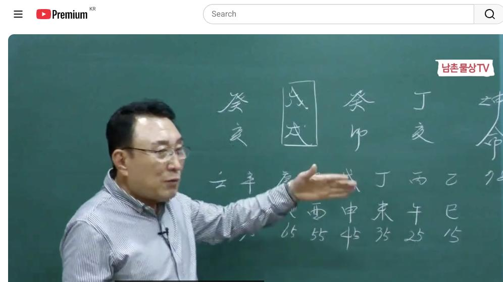
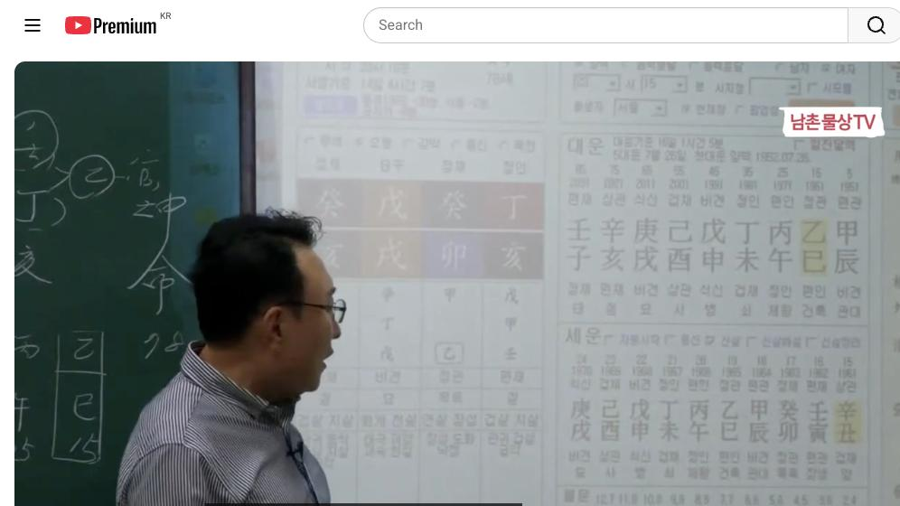
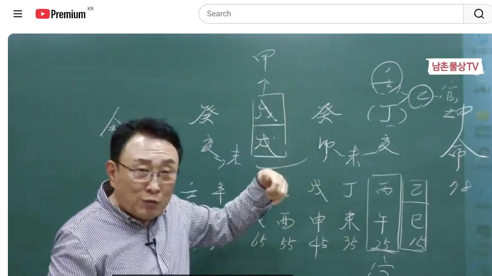
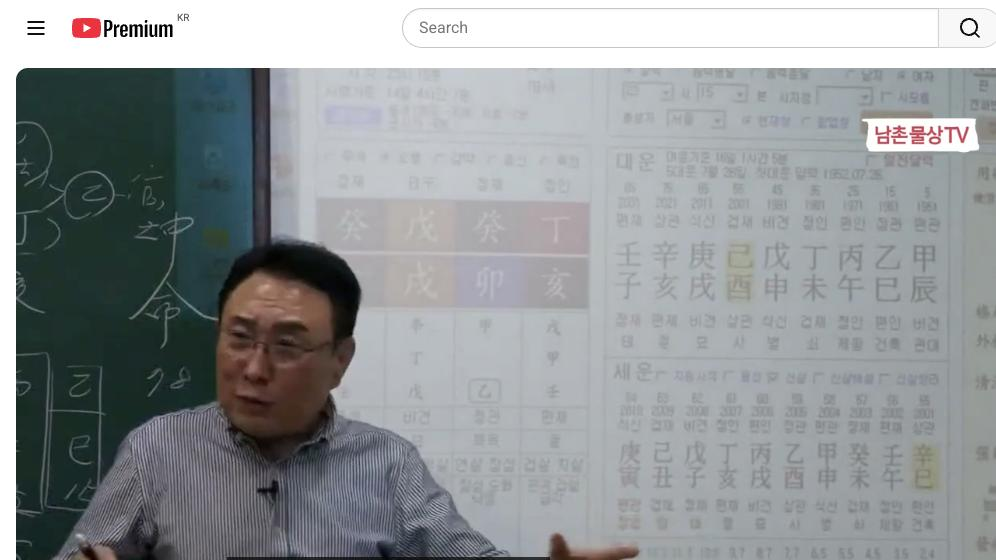

남촌물상TV 전체 문서 › 동영상 V0066
[실전사례]34 당신도 위험한가요? 사주로 알아보는 단명의 비밀 상담문의 : 010-3139-6645

| 문서 번호 | V0066 (동영상) |
|---|---|
| 영상 URL | https://www.youtube.com/watch?v=2FUO-gnYGok |
| 영상 ID | 2FUO-gnYGok |
| 게시일 | 2024-04-15 |
| 길이 | 37:38 (2258초) |
| 조회수 | 3,495회 (수집 시점 기준) |
| 카테고리 | Howto & Style |
| 자막 | ko (자동생성) |
| 수집 시각 | 2026-08-30 19:08 (KST) |
영상 설명 (YouTube 설명 원문 그대로)
당신도 위험한가요? 사주로 알아보는 단명의 비밀 #실전사례 #사주 #단명
전체 자막 (782구간 · 타임스탬프 클릭 시 해당 장면으로 이동)
[0:01][음악]
[0:04]자 한주 잘
[0:05]멋있습니까 우리 그 저 화요일날
[0:08]학교로 안 갔더니 그 아주 굉장히
[0:11]편한거 같았습니다 엄청나게 좋았어요
[0:13]저가
[0:15]그 벚꽃들 이제 그 바람이 많이
[0:18]떨어지죠 떨어지기 전에 많이 보시면
[0:21]되지 콧바람도
[0:22]세고
[0:25]자 이제 밴드에 올린 사주를 한번
[0:28]이제 풀어봅시다이 사주가 여러분들이
[0:31]풀기가 굉장히 어려워요 제가 제가
[0:33]풀어도 쉽지 않는 사주입니다
[0:36]그리고 또 뭐가 있냐 그러면 이제
[0:39]여기에서 제가 발견 그게 제가 왜
[0:41]여러분들이 자꾸 그걸 풀어보라 하냐
[0:44]그러면 결혼 시기를 선택해서 본인이
[0:49]그 삶을 바꿀 수가 있다는 걸 여기
[0:52]알 수 있어요 여기서 판단한게 그래서
[0:54]직접 써 보셔야 돼 여기서 결혼
[0:57]시기를 제일 잘 쓴 분이 있더만 딱
[0:59]마친 분이 있어
[1:01]근데 다들 써 보셔야 돼요 그래야 그
[1:05]내가 발견을 그 보고 못 했던 것을
[1:07]찾을 수가 있어요음 그렇게 해 보시면
[1:11]됩니다 자 그러면 정해 계묘 무술
[1:16]개해 자 소 정예 생가 78세
[1:20]여자인데 그럼 이제 이런 사람들의
[1:23]사주 특성을 얼른 보시면 이렇게
[1:26]무술이라는 글씨가 이렇게 딱 그 저
[1:28]가운데가 막아져 있어요 이렇게 땅 땅
[1:31]자 그러면 그 통로 10으로 쭉
[1:33]막아져 있다고 보시면 되죠 그러니까
[1:35]바다를 막아 놨다 그러니까 자
[1:39]여기에서 초연에서는 바다고 물을
[1:42]막은다고 여기서는 후반기는 결과적으로
[1:45]담수가 돼 있는 상태로 보시라 그게
[1:47]시화의 호수를 보시면 돼요 시화의
[1:50]호수 시화에가 보셨죠 다들 그 자
[1:53]대부도 갈 때 가시잖아요 리 끝나가면
[1:56]그럼 이제 이런 걸 연상을 하게 되면
[2:00]이분이 그 삶의 개척을 쭉 보시면
[2:03]금방 알 수가 있잖아요 어 그래서
[2:06]내가이 그
[2:07]의미를 큰 그 바다를 막아서 한쪽에는
[2:12]물이고 바다고 한쪽은 담수어 아라고
[2:14]이해하신게 좋다라고 설명을 드린
[2:17]거예요음 자 그러면 여기에 이제이
[2:21]무토는 우리가 먹고 사는 방법이
[2:23]무토가 먹고 사는 방법이 첫째 아까
[2:27]나무를 심어서 재물이 물이기 때문에
[2:30]물을 빨아서 돈을 벌 거냐 그렇지만
[2:34]없으면 땅을 파서 우리가 물을 만들
[2:36]거냐 이것이 이제 우리가 그
[2:40]근본적으로 무토가 먹고 살 수 있는
[2:43]길이에요 크게 봤을 때 자 그런데
[2:47]물은 많이 있잖아요 물은 많이 있다
[2:50]근데 이제 물이 많이 있다라고 해도
[2:54]물은 항시 그냥 단어만 놓으면은 그
[2:58]물을 썩어요
[3:00]그래서 아무리 우리가 그 조그만
[3:05]생물이라도 물이 원천수 자꾸 나와
[3:07]줘야 물이 깨끗하고 새로운 물이
[3:11]되는데이 사주는 그냥 딱 막아서
[3:14]이쪽에 완전히 후반서 뭐예요 물로 딱
[3:17]잠기 이거 썩은물이 되는
[3:19]거예요 그 사주로 구비하시면 돼요
[3:22]그러니까 자 여기까지 살고
[3:25]여기까지는 썩은물이 사 죽지 근데
[3:28]이렇게 이해하시면 되잖아요
[3:31]그래서 상적으로 이해한다는 얘기가
[3:35]이제 그런 쪽으로 이해하시면 돼요
[3:38]그러니까 바다를 막을 때 우리 그냥
[3:40]쭉 막아 버리잖아요 막어 그 한쪽에는
[3:43]그 저 민물이 있을고 한쪽은 뭐가
[3:45]있어 바닷물이다 말이에요 이제 그런
[3:47]과정을 연상하게 되니까이 사람 인생은
[3:50]여기까지예요 여기서 벗어지는
[3:52]결과적으로 없는 거예 자 이렇게 그
[3:55]보시는게
[3:58]맞다 자 그럼 이런 사람 한테 첫째
[4:01]없는게 여기서 이제 뭐가 없어요 자
[4:04]금이 없다 그 말 금이 자 금이
[4:06]없다는
[4:10]얘기는
[4:12]물을 계속 생산할 수 있는 물이
[4:16]능력이 없다 그 말이에요 자 그런데
[4:19]그럼 물을 생산하면 어떨
[4:21]건데 계속 물을 많이 만들면 여기
[4:25]나무가 심어져야 뭐가 될 거 아니에요
[4:27]그래야 안 무너질 거 아닙니까 아무리
[4:29]튼튼한 벽도
[4:31]댐도 문을 많이 계속 장기만 놓으면
[4:34]무너지게 돼 있는 거 넘치지 않
[4:36]치겠어요 무너지지 그래서 금이라는
[4:39]존재
[4:41]자체가 우리가 이제에이 물을 만드는
[4:44]역할 재물 무리가 물리 재물이 만드는
[4:47]역할을 하기 때문에 괜찮다 당히
[4:50]있어야 된다 이런 조건인데 그럼 물을
[4:53]해서 계속 생산만 해 놓으면 그 물을
[4:56]어떻게 할 거예요 뚜이 무너지지 안
[4:58]무너지겠지 무너지죠 네 이제 이런
[5:01]사주의 근본적인 원인이 돼 있다
[5:05]그러면 여기에
[5:08]생각하는게 갑목이 큰 나무를
[5:12]심었으면 괜찮죠 안
[5:15]무너지죠 근데 갑목을 만들 자가
[5:19]없어요 없어 천간에 그러면 자
[5:23]여기에서 정화에서 자
[5:26]정화에서 임수를 끌어다가 을목을 만들
[5:29]수 있잖아요
[5:31]그죠 을목을 만들 수 있어요 그럼
[5:34]여기에서 뭘
[5:35]끊어놨어 돈을 벌기
[5:38]위해서 재물
[5:41]임수 나의 재물을 끌어다가 정립 합을
[5:46]하게 되면 작은 을목이 된다 그
[5:48]말입니다 그러니까 이제이
[5:51]을목의
[5:53]행위라는게 교육적인 건데 본인이
[5:57]계수에서 목에서 부토의 땅이기 때문에
[6:01]이런 사람들은 교육을 할 수가 없어요
[6:03]그래서 이제 어떤 학습지라 그가
[6:05]교육의
[6:07]관계되는 그러한 일을 당분간 할 수가
[6:10]있다 이렇게 이해하시면 되죠 그렇게
[6:13]되면 여기에 이제 뭐가 있어요 해묘
[6:17]미라는이 여기에 목구이 생길 수가
[6:22]있어요 자 그러면 자
[6:25]볼까요 여기 해묘미 한 번 하면
[6:27]여기도 해묘미 한번 할 수 있죠
[6:30]그죠 자 여기 여기 한 변하면 여기
[6:33]해미가 되면 여기도 해묘미 밑만 붙어
[6:35]해이 될 거 아니에요 그죠 자 이런
[6:39]경우를 우리가 얘기했을 때 어떻게
[6:41]해석을 해야 될
[6:42]것인가 목을 여기서도 만들 미토가
[6:45]있다 그
[6:47]말이에요가 자 그럼 여기 한번 해이
[6:49]여기 한번 해이 요렇게 해이 될 거
[6:52]아닙니까 그렇죠 그게 두 번 해할 수
[6:55]있다는
[6:57]얘긴데 그러 이런 사람이 두 번
[6:59]결혼해 할 수 있잖아 우리가 그죠
[7:03]근데 여기에서 복을 만들 수 있는
[7:06]차가 이거 한 번 써먹을 수밖에
[7:08]없잖아요 자 그렇다고 생각하면은
[7:11]여기서 한번 생각합시다
[7:13]목이라는 것은 나의 관이야 여자
[7:16]입장에서 내 남편이고 나의 관이다이
[7:19]말이에요 근데 여기서 정립 한목을
[7:22]썼으면 여기 정립하고 쓸 것이
[7:24]없잖아요 그죠 그러니까 여기에서이 정
[7:29]한 한 번만 쓰는 거 두 번 쓸 수
[7:31]결론 두 번 재원 안 한다는 얘기죠
[7:32]안 한다 결론이
[7:34]나오는데
[7:36]그러면이 무토의 을목이 심어진
[7:40]결과예요 관이 그죠 척박한 땅에서
[7:44]을목이 살아가기 때문에 나의
[7:47]남편인이 목의
[7:51]관이 흡족 할까요 안 흡족
[7:54]할까요 안
[7:57]하죠 그러니까 내 남편의 역할이 이
[8:00]제대로 안 된다 그럼 자 우리 제가
[8:02]생각할 때 이런 거 있어요 사주
[8:04]구성이 남편의 역할이 안 된다 할 때
[8:07]어떻게 하면은 내 딸을
[8:09]보냈는데 제대로 보낼까 이걸 한번
[8:12]생각해 보자 그
[8:14]말이에요 이게 제 아까 얘기한 관을
[8:18]올 때 첫째 갑목이 필요하잖아요
[8:21]갑목이 올 때
[8:23]필요한 그 운을 택해야 돼 그래서
[8:27]일생일대에 누구를 만나느냐가 제일
[8:30]중요한
[8:31]것이다 이게 이제 첫째요 그러니까이
[8:35]사람은 사주 구성에서는 을목의 남자를
[8:40]만난다는 얘기는 나의 재물 아고
[8:43]관계가 있는
[8:45]남자지음 그죠 그러면 결과적으로 내
[8:48]재물 관계 있는 남자인데 내 재물을
[8:52]희생해서 뭐야 을목을 만들었다는 얘기
[8:56]아닙니까 그죠 그러면 내가 돈 내가
[9:00]버려야 돼 안 버려야 돼 버려야 되지
[9:02]자 이렇게 통이 나가는 거예요
[9:04]여러분들이 이렇게 어렵게 생각하지
[9:07]말고 기본 배우신 대로만 이해하시면
[9:11]좋다 이제 이해 되셨죠 자 그러니까
[9:15]이제 여기에 목이라 을목이 자체는 내
[9:18]남자인데이 남자를
[9:21]만들기까지는 내가 희생을 해이 재물
[9:24]돈 내가 돈을 벌어 가면서 정 한
[9:28]목으로 을목을 만든다 그 말이야
[9:31]만들어야만이 나의 관이 생겨 그
[9:34]말입니다 그러니까 내가 그 생에서 그
[9:38]남자를 택한 남자지
[9:41]그러잖아요 근데 이제 우리들 저 어어
[9:44]내 딸이라고 가정하면 내 딸이 이런
[9:47]사주를 가질 때 여러분은 어떻게 해야
[9:49]될 거냐 그 말이에요 그게 중요하죠
[9:53]이것이 우리가 할 수 있는 일이고 얘
[9:56]하나 팔자를 바꿀 수 있는 일이에요
[9:59]타고난 팔자는이
[10:02]팔자야이 사람이 타고난 팔자는
[10:04]이거라고 전체가 근데 본인이 타고난
[10:08]팔자 이런 내이 사주를 가지고 그러면
[10:12]이렇게 타고난 팔자 계속 이렇게
[10:13]살아야 되겠냐 그 말입니다 내 딸이
[10:15]이렇게 산다면 여러분 되겠어요 아니죠
[10:19]그럼 어떻게 해서 안 되게 만들고
[10:21]싶은게 누구 마음이요 보모
[10:24]마음 이걸 우리가 해 줘야 된다 그
[10:27]말이에요 그래서 아까 얘기한 우리이
[10:31]사주는 특성이 갑목이 옳 남자를 만나
[10:36]줘야 된다 자 그러면 우리가 항시
[10:39]결혼 얘기를 할 때 뭐라
[10:41]그랬어요 그 시기에 잘 맞으면 준비가
[10:45]완전히 돼 있는 사람하고 결혼한
[10:48]것이고 그렇지 않은 사람은 준비가
[10:51]되지 않는 상태에서 결혼한 거다라고
[10:52]제가
[10:55]얘기하죠 그 여러분들이이 내 딸이라고
[10:58]생각해 봐 그러이 이걸 갖다가 어떻게
[11:00]해서 내 딸을 여러분이 공부를 하기
[11:03]때문에 내 자식이나 내 관련된 사람이
[11:06]이렇 사지고 올 때 이걸 탈피해서
[11:08]이게 갈 수 있는 길을 여러분들이
[11:11]제시하고 만들 수 있어야 된다 그
[11:14]말입니다 그러니까이
[11:17]공부가 내가 사주만 보는 것도
[11:20]중요하지만 내 자식 하나 성장
[11:24]시키는데도 내가 사주를 가지고 잘
[11:27]알면 크게 도움이 된다 그 말입니다
[11:32]그 여러분
[11:33]자식들이이 그어 사주가 이렇다고
[11:36]생각할 때 어떻게 해서 내 자식을
[11:39]제대로 올바르게 잘살게 할 수 있냐
[11:41]하는 것도 있어요 그러니까 어느 시때
[11:44]누구를 만나느냐가 1번 어느 환경이
[11:47]만나느냐가 2번이라고 제가 자꾸
[11:49]주장한게 팔자를 바뀔 수 있다라고
[11:50]얘기한
[11:52]거예요 그 이제 이해가 되죠 자
[11:58]그러면이 그 그 계수들이 한번 봅시다
[12:03]계수들이이 개가 두 개가 있잖아요 두
[12:06]개가 그럼 아까 직업을 쓸 때도 보면
[12:09]직업을 선택하기도 여러분들이 굉장히
[12:11]애매해요이 사람이 뭘 해야 줄까요 할
[12:13]거라 그 말이에요 그러 두 가지가
[12:15]밖에 없어요 쉽게 얘기해서 정화에서
[12:18]목을 만들어 쓰는 행위 하나가 목 쓸
[12:20]거 있고 목이 지금 사주가 뿌리
[12:22]없잖아요 이슬 행위 하고 그다음에
[12:25]뭐예요 무게 합해 만들어서 먹고사는
[12:27]방 두 가지밖에 없어요
[12:30]금을 쓰면 나무가 심어지면 안 되는
[12:33]거야
[12:34]무너져 그래서 금의 직업도 할 수가
[12:37]없는
[12:40]거예요 럴 쓰는 거야 왜 금을 쓰게
[12:44]되면 봐라 물 쓰게 되면 물만 계속
[12:49]많아져니까 물만 많아지게 되면은이
[12:52]때이 무너지지 안 무너지
[12:54]겠냐고 그래서 우리는 뭐야 숨 조절
[12:57]하잖아요 우리가 때에 그 지면 청평
[13:00]때문에 수을 열어라 그럼 한강물도
[13:04]열어라 하잖아요 조절 기능이 없다 그
[13:08]말입니다이
[13:11]사주가 그 이것이이 사주 근본적인
[13:15]핵심입니다 그 여러분들이 이걸 찾기가
[13:17]굉장히 어려웠다 저 이해할 수 있어요
[13:21]어렵다 오직 이에는 결혼을 남자를
[13:24]선택 잘해야 돼 그 말은 뭔 얘기냐
[13:27]오직 무토 을 심은 남자를 만나야
[13:30]된다 그
[13:32]말이에요 갑목의 남자 근데 이제
[13:35]봐봐요 그자 우리가 갑목의 남자라면
[13:38]갑목이 우리가 교육 건축 사람을
[13:40]상대하는 중에서 학교 쪽을 관계 가면
[13:43]대학 교수 있죠 갑목이 근데 자기
[13:46]환경이 대학 교수를 만날 수 있겠냐
[13:50]말이에요 그러니까 자 공부 잘하 놈을
[13:54]우리가 학생들 만나려면 어디로 가야
[13:56]돼 명대 아 명문대 가고
[14:00]그 주위에
[14:01]살아야지 그러니까 지금 저 서울대학교
[14:03]주번 신림동 아닙니까 시촌 아니에요
[14:06]그래서 하숙을 치든지 자우지 거기가
[14:08]서울 대학생을 잡아야 될 거 아니야
[14:09]그 말이 내 얘기는 거기 가야 서울
[14:12]대학생이 많은데 보는 곳이지 저
[14:14]시골서 살아 근데 서울 하나 만나 봐
[14:17]힘들지 않아 안 되는 거야 그래서 그
[14:19]한계 어디에서 살아갈 수가 있느냐가
[14:23]그 사람의 그런 기회를 마련해 주는
[14:25]걸로 보시면 돼 여자가 인물 이뻐요
[14:27]예를 들어서 이뻐 그러면 자 학교
[14:31]신림동으로 살다 보니까 서울대학생들이
[14:33]마음이 많나 그 저 이쁘게 생겼 눈
[14:36]들여 그 인연이 되는 수도 있다 그
[14:38]말이에요
[14:39]쉽게해서 그러니까 어느 환경에서 그걸
[14:43]내가 존재하고 있느냐 그 말이에요
[14:45]근데 내가 시골 사는데 시골 농사지
[14:47]딸이야 그 시골서 아버지 농사데 살아
[14:49]근데 언제 서울대학생 만나고 언제
[14:51]언제 교수를 만나 안 만날 길이
[14:55]없잖아요
[14:57]자 우리는이 공부를 한 사람 이기
[14:59]때문에 첫째 내 자식부터 여러분들이
[15:02]전는 했으면 쓰겠다 이걸 말씀을
[15:05]드리는 거예요 저도 내 자식에 대해서
[15:08]하잖아요 내 자식에서 제가 다른 거는
[15:11]몰라이 공부에 보람을 낀
[15:14]것은 내 자식 성공하게 만든 건데
[15:16]만들어 봤어요 이겠다 그니까 어떤
[15:19]사람들이 그 저 질투한 사람이 뭐라
[15:21]하냐면 그 사람 자식 자랑한다고
[15:22]그렇게 하 사람이 있어요 선 사람이
[15:24]봤어요 제가 댓글 다사
[15:26]봤어요 근데 나는 그걸로 성공했습니다
[15:30]그러니까 내 방법과 내가 사주
[15:33]구성으로서 그 진로 결정을 택해서 그
[15:36]길을 만들어 줬기 때문에 성공했다
[15:38]얘기예요
[15:40]아무리 사주가 좋아도 사주가 좋아도
[15:44]그냥 시골 농사고 놔들로 그 살 그
[15:46]삶을 농사꾼이다
[15:48]그 교수가 될 사주는데 시골에서 농사
[15:52]주고 그냥 앉았으면 그 사람은 그냥
[15:54]농사 놔 들러서 끝나는
[15:56]거예요 서울에 와서 공부도 하고
[16:00]인류 학교에서 공부도 하고 해야만이
[16:02]그 사람이 성공할 수 있는 길이 된다
[16:04]그 말입니다 그 여러분들은 지금 그
[16:08]어떤 사람 그런 사람 있어요 어
[16:10]미국의 저한테 그 사주 보신 분이 그
[16:13]그 그 부인이 자식 껏 벌려고 자기는
[16:16]공부해야 된다 이게 그런 사람도
[16:19]있었어요 그래서 남편보다 미국서 굳이
[16:22]꼭 가서 그 남 선생 만나고 당신
[16:25]상담하고라 그래 저한테 왔다 갔잖아요
[16:27]근데 그분 말하는 얘기야 우리
[16:31]부인은 자식을 성공시 제가 공부한다
[16:35]그런 사람이 있습니다 그 그 틀린
[16:39]옳은
[16:40]얘기입니다 자 우리도이 공부를 해서
[16:44]돈 버는 것도 중요하고 여러 가지
[16:47]있지만 이렇게 지금 배우신이 학문을
[16:50]가지고 어떻게 새롭게 이걸 끌어서 내
[16:56]자식한테 응용할 수 있는가를 해보시라
[16:58]그 말입니다
[17:01]아셨죠네 자 그러면 이제 여기서 저
[17:04]15살 때 한번 봐요 15 15대
[17:06]대운이 자을 을사대운 이죠 자 을사
[17:10]대운이 그러면 여기서 자
[17:14]보세요 자 사라는 것은 쉽게해서 항시
[17:19]생각할 때 을목은 경금을 끌어와 사는
[17:22]사이에이 개을 가지라 그랬어요 제가
[17:25]대운에서 그러 을목이
[17:29]영이 뭔가를 먼저 봐야죠 그럼 자
[17:32]일찍감치 관이 왔죠 자 여기에 이제
[17:35]일찍 관이 왔다 그
[17:37]말이에요 지금 사주
[17:39]구성에서 초년에 정림 한목 을목을
[17:42]쓰라고 이미 나와 있어요 나와 있죠
[17:45]그러면 네가 요때 만나는 남자는
[17:48]만나는 쉽게 기서 내가 희생을 해서
[17:52]만나는 남자고 만나 그 얘기예요
[17:55]간단하게 그럼 여기 목이 여기 심어질
[17:57]거 아닙니까 그 얘기 아까 우리가
[17:59]사주 원곡을 해석할 때 충분하게
[18:02]여러분들한테 설명을 드렸어요 그
[18:04]대운이란게 그런 거예요 그래서 원구
[18:07]너는 을목의 남자를 이거 심으면 안
[18:09]된다고 했는데 심으로 운지았다 그
[18:13]말이에요 이걸 탈피를 하면 되는데 못
[18:15]탈 필요 못
[18:16]했다 자
[18:19]그다음 그럼은 뭐냐 그
[18:22]말이야는 사는 자 사는 해하고 사가
[18:26]있다는 얘기는 사해 충이라고 우리가
[18:28]그 보통 조정 얘기하는데 사회중 필요
[18:30]없어요 그냥 인신 사의 개념으로 봐
[18:32]그러면
[18:34]너는 뭔가를 고향에 살다가도 떠나가서
[18:38]가겠네 생각하시면 되죠 고향은 새로운
[18:41]뭔가를 개혁을 하러 가겠다라고 하는
[18:43]얘기가 될 거라 이거 생각하면 되죠
[18:45]이제 이렇게 아하 대운에서 그렇게 돼
[18:47]있네 자 이것을 가지고 여러분들이
[18:51]이제 사주 구성을 찾으면 되지 찾으면
[18:53]돼요 자
[18:55]봅시다 지금 그 어
[18:59]구성이 지금 을사 대운을 한번 봐
[19:01]봐요
[19:03]공부할테니까
[19:05]자 자 을사 을사 대를
[19:08]보면
[19:10]자 17살 때가 대학교 우리가
[19:12]고등학교 1학년이에요 그러면 자 개
[19:15]묘가 됐죠 자 개묘 오니까 어떻게
[19:18]할까 쓰리 개가 됐잖아요 쓰개 그럼
[19:22]하나에서 각기 합이 됐죠 그러니까
[19:24]밑에는 뭐예요 해묘미라고 목을 줬단
[19:27]말이야 그럼 나무 심을 수 있죠
[19:29]교죠 그다 갔다 그 말이에요 갔냐 못
[19:32]갔냐 여기서 나오는 거예요 자 그런데
[19:35]19살 때가 이제 사예 월사 그럼
[19:39]나무가 심어져서 갔을 거 아니에요
[19:41]이제 그러니까 여기서 을목이 왔네
[19:44]자이 이거 그걸 생각하게
[19:46]아니라 요때는 뭐예요 자기 목이
[19:49]관이라 나의 일생 직업도 돼 그런 자
[19:52]사가 와서 일신 사이가 된다고 예측해
[19:55]줬죠 그러니까 자기의 관 업을 찾기
[20:00]위해서 내 고향을 떠날 수도 있다
[20:03]이렇게 해석이 되는
[20:04]거예요 이해 됐죠 자 그런데 그런데
[20:09]이게 이제 이게 문제가 되는 거지
[20:11]가만히
[20:12]보면 그게 지금 대운에서 대운에서
[20:17]이미 을에 쓰라는 대운을 예측했고
[20:21]여기에서 쉽게에서도 예측해 준 거예요
[20:24]그럼 여기서 남자를 만나겠어 안
[20:26]만나겠어 그럼 이제이 대운 그래서
[20:29]어느 때 남자를 만나는가 보면
[20:32]되지 어느 때 남자를
[20:35]만나겠네 근데 이제 이분이 자 이런
[20:38]사람들이 문제가 있는게 뭐냐 그러면요
[20:40]여러분들이 잘 생각해 보세요 문제가
[20:43]됩니다 이런
[20:44]사주는 사주 구성이 내가 희생을 해서
[20:49]결과적으로 내 돈 써 가면서 남자한테
[20:51]희생하는
[20:52]거예요이이 이게 답이란 말이에요
[20:55]그러니까
[20:57]네가이 나의 재물 국수 임수의 재물을
[21:01]합에서 을목이 느키 내가 돈을 써가서
[21:03]남자를 만나는 남자예요 그것이 뭐요
[21:07]을사대운 사 대운이 사연으로 갔다이
[21:11]말이에요 자 그러니까이 사람이 찰
[21:16]파요 저 기후라는게 있죠 기유 그리고
[21:20]그다음에 뭐예요 무신이 자 볼까요
[21:25]무신 무신에
[21:27]무신에 하나가 이제 다
[21:30]기죠 그렇잖아요 그럼 본인이 답답할까
[21:34]안 답할까 답답할까 그러면 자 나의
[21:37]재무하이라이트
[21:45]답답한데 뭐를 해야지 근데 무무로
[21:49]묶이니 기토가 됐잖아요네 그러면 자
[21:52]기토 갑목을 불러온다고 생각할 거
[21:54]아니야 목을 관을 써야 되겠다 근데
[21:56]저 기 기유가 있네 연심 기운영
[22:00]있잖아요
[22:01]23살이 이걸 연상을 하시라고
[22:04]대운에서 뭐이이 저이 22살 때
[22:08]연장선으로 봐야
[22:10]돼 개 개로 묶이니 기 기가 됐을 거
[22:14]아니에요 그런데이 그 기가 23세
[22:18]기우 아니에요 그러니까이 기가 들
[22:21]쓰기가 될 수도 있어요 그러니까 관을
[22:25]끊어다 심 하려고 안 하네 하지 그때
[22:28]남자 를 만나는
[22:30]거야
[22:32]근데 그때도 만나는 제가 유금
[22:36]아닙니까 자오면 되잖아요 그러니까이
[22:39]사주 근성이 을목을 만나면 안 되는
[22:42]거예요 만나면 자 안 되는 거야 근데
[22:46]이제이 개 개에서 기토가 되면 자기가
[22:52]선택한
[22:53]남자지 내
[22:56]재물을 희생에서 깃으로 만들어서 온다
[22:59]그 말이에요 그니까 아까 여기서
[23:00]생각했던 그대로 나오죠
[23:03]여기서 그러니까 내가 선택한 것을
[23:07]내가 선택한 남자가 되는 거야요 아까
[23:09]돈 내가 돈 속하면서 만난 남자 그게
[23:12]불쌍해서 만났든 어쨌든간에 그런
[23:15]형태로서 만났던 만나게 된다 그
[23:18]말입니다 그 만나게 된 거예요 그래서
[23:22]이런 사람이 그러면
[23:24]자으로서 만난다는 얘기는 이제 어떤
[23:29]현상이 될까요 그 말이에요 언제가는죠
[23:31]문제가
[23:32]되죠 그리고 금이란 자체를 여러분들이
[23:36]잘 생각하셔야 돼 금이라는 개념은
[23:40]항시이 우리가 그 사주를 유금을 볼
[23:43]때 미스때 이렇게 혼전 이럴 때
[23:47]보면은 문제가 있는 거지 대부분이
[23:49]그건 자 유공은 뭐로 보라 있어요
[23:52]자궁으로 보라 있잖아요 그니까 그런
[23:54]개념까지 깊이 생각한 우리는 해야 돼
[23:58]그러니까 시대에 따라서 사주를 보셔야
[24:01]한다 그 말이에요 유금이
[24:04]유금이 미스때 혼전의 관계 있으 유금
[24:07]하고 늙어서 유구하고 틀릴 거
[24:09]아니에요 이런 관계성 그러니까 물상이
[24:13]쉬운 것 같지만 력이 풍부하다 그
[24:17]말입니다 지금 우리 창업님께 하는
[24:20]거예요 자 그렇게 해서 남자를 만나게
[24:24]되면 뭐 뭐 하겠어요이 사람이 자
[24:27]신수술 이유가 붙을 거 아니에요
[24:30]그렇죠 그러니까 자기 부부가 합이 돼
[24:32]안 돼 그냥 그때부터 그냥 동구로
[24:35]들어가 본 거야 그리고 관이 부실하지
[24:40]사주가 그러니까 이게 이게 소위 준
[24:42]무관 사주라고 그는 건데 그러니까
[24:45]내의 질서 순서를 잘 안 지키는
[24:48]경로가 되는 거예요 정상적인 갑목이
[24:51]떡 있으면 안
[24:53]그렇지 그러니까 없기 때문에 헤미
[24:56]하고 싶고 뭔가이 터에다 목을 관을
[25:00]신고 싶다 그 마음이다 그 말이에요
[25:03]그래서 질서 순서지 안 지킨다 이렇게
[25:06]하시면 되지 그래서 결국은 동부에
[25:09]들어갔구나 예 자 그다음에 그다음에
[25:12]여기 이제
[25:14]에에 병오년 이죠 자 병오년 자 병호
[25:18]대원에 한번
[25:20]봅시다이 대운에 만나야 돼요 첫째는
[25:24]그러면 여기에서 만약에 병 오니까
[25:27]목만 붙으면 꽃히고
[25:30]세울지 그 그 연도를 찾아보라 그
[25:32]말이에요 누가 찾으 28살 뭐였어요
[25:35]한번 찾아봐 지금 여러분들이 그 저
[25:38]딱 쓰신 분 있어 누가 썼어 김철
[25:41]선생님
[25:43]쓰셨나 누가 썼어 자 그 찾아보면
[25:47]아이고 여기 와 있네 갑인이 와
[25:51]있네 알 수 있잖아요 어 갑 위이
[25:55]왔으니까 자오면 나무가 심어지면 호
[25:57]소리지 아
[25:59]음 그렇잖아 그러니까 이제 여러분들이
[26:02]생각할 때 여기서 봤을 때 딱
[26:06]대운에서 어떤 흐름이 있는가를 이때는
[26:09]이제 그냥 찾아보면 되죠 아 병란게이
[26:13]사주하고 어떤 관계가 있을까 그 말
[26:15]아니에요 어떤 관계가
[26:17]있을까 그러면 자 여기에 술토가 있다
[26:21]아니까 지지의인 수리네 여기까지
[26:24]생각할 수 있지 여기 인만 붙으면
[26:25]되잖아요 그죠 그러면 뭐 수익 될 거
[26:29]아니에요 아 그러면 감옥만 찾으면
[26:33]되겠네요 그때 팔자가 바뀌는 거라 그
[26:35]말이에요 그때 만약에 28에
[26:38]결혼했다면이 사람은 갑목의 남자를
[26:41]만나게 남자를 만나게 된다 그
[26:43]말이에요 그러면 자 갑목이 만약에
[26:46]심어졌다 해봐요 편하지 일생이 일생이
[26:50]달라지 팔자가
[26:51]달라지죠 팔자가 다 바뀌는
[26:57]거예요 이게 이게 이게 진짜예요
[27:01]그러면 자 갑목이 심어졌다 가정할 때
[27:05]여기에 있는 정림 한 목의 을목은
[27:09]뭔가이 을목이 나한테 등락이 할수
[27:11]국가적인에 등락 남자가 올 거예요
[27:14]갑목이 심어지면 정님 한 목도 올 거
[27:16]아닙니까 등불도 달리자아 그러니까
[27:19]국가에서 등불 달린 남자가 되는 거지
[27:20]그러니까 선택의 여지가 그 시기가
[27:24]그렇게 중요하다는 것을 아셔야 한다
[27:29]자 이해
[27:30]됐습니까네 이것이 가장 핵심적인
[27:32]거예요 여러분들이 이해할
[27:37]자 그다음에 이제 중간중간 한 것은
[27:41]지금 시간 관계상 제가 그 저
[27:43]유인물이 다 있으니까 여러분들이 전부
[27:45]다 잘 풀어 오시면
[27:48]되는데 그러면 자 사업상의 문제를 볼
[27:52]때와 틀릴 때가 한번 봐 봐요이
[27:55]사람이 그러면 잘 보시면
[28:00]정미 때는 어쩌고 정 무신 대운이
[28:03]어쩔 거냐 한번 잠 대만 설명할게요
[28:06]그럼 정화가 왔다는 얘기는 정화
[28:08]왔다는 얘기는 자 미토가 묘미죠
[28:12]해묘미 뭔가 갑목에 등불을 달고 싶다
[28:16]그 얘기예요 자 해묘 미가 되는데
[28:20]정화의 등불을 달고 싶다 그 말
[28:23]아닙니까 그러면 자 정화의 등을 달고
[28:26]싶다 얘기는 목에 나무에 정화를 담고
[28:29]싶 새로운 뭔가를 하고 싶겠지 그
[28:32]말이야 뭔가 그러면 자 사업성으로
[28:35]가겠죠이
[28:36]사람이 그때 이제 우리들이 이제에
[28:39]어느 시대를 여러분들이 다 겪어봤지만
[28:42]그때 한참이 태평양이나 이런 그 방판
[28:46]회사들은 어떤 특성이 있냐 이런 것도
[28:48]아셔야 돼요 제가 그 저 그 태평양
[28:50]학에서
[28:52]알잖아요 방판이 강해지면 재판을 또
[28:56]키웁니다 뭔 얘기냐 방판과 우리가
[28:59]재판을 두 개가 있잖아요 방판이 것은
[29:01]방문 판매를 얘기했던 것이고 제도
[29:04]판매라는 것은 코나 매장을 가진
[29:07]역할을 우리가 제도 판매로 그래요
[29:10]그러니까 균형을 맞춰야 돼요 자
[29:13]그러면 우리가 사업을 할 때도 방판
[29:17]소위 예판 쪽으로 판매 성장이 막
[29:19]돼버리면 이쪽 우리 코로나가 다 죽어
[29:22]버리잖아요 죽잖아요 균형을 맞
[29:24]그러니까 자 이게 커지면 또 다시
[29:27]뭘로가 방판 쪽으로
[29:29]줘요 이게 이게 그 저 회사 정책이란
[29:32]말이에요 그래야 균형을
[29:34]맞춰야지 그러니까 회사가 제가 태평도
[29:37]어떤 거 있냐
[29:39]그러면 방판이 영원할 수 없다고 우
[29:41]얘기한 거예요 그때도 사람이 나중에
[29:45]인력난도 있고 뭐 영원하다 그럼
[29:47]뭐예요 각 상 그 저 점포에서 팔 수
[29:51]있는 제품을 만들어야 된다 이게
[29:53]였어요 그래서 이제 그때 제가 태풍
[29:56]들어갈 때 일본 시세도 하장 자생
[29:58]하고 기술할 때요 그래서 아무래
[30:00]펄스킨 나올 때예요 하장 하이토 나올
[30:03]때 그 이제 그러한 과정이 회사
[30:07]정책이란 말이에요 자 그이 사람들이
[30:09]이제 그때 당시 뭐가
[30:11]있었냐면 그 화장 판매할 때 뭐
[30:14]있었냐면 그 암호가 겨 있어요
[30:16]유출시키지 말라고 판매 사원들한테
[30:18]그러면 이제 약물 딱 바르면 글씨가
[30:21]딱 나와요 그래서 어느 대점 나갈 때
[30:24]다 찍어서 내버립니다 a 대회를
[30:27]찍어버릴 다 어 보내요 근데 그
[30:29]제품이 다른 데서 굴러 그러면 생물
[30:32]다 그 단속 방이 있었어 그 그 차주
[30:35]있어 직원들이 그럼 그거 걸리면 이제
[30:37]대점 취소를 하 이쪽 막 그죠 왜 자
[30:40]회사에서 자금을 그 마 얼마 수금한
[30:43]걸 다 빨리 걷어 없잖아요 그럼
[30:45]갖다가 덤핑으로 팔지 그 그것이 이제
[30:49]유출이 된 거지 이걸 잡으 되
[30:51]있었다고
[30:52]옛날에 그걸 못하게 하는 거거든요
[30:55]그러면 약물 쫙 바르면 아무가 딱
[30:57]떠요 그러 어디서 어느 대지 왔 금방
[30:59]알아요 어 그 제질 하고
[31:02]있었는데 이제에 이분이 이제 그때
[31:05]당시도 이제 뭐 있냐면 이제 그
[31:08]코너가
[31:09]생겼잖아요 그러니까 화장품이 종합
[31:12]코너가 생겨 그럴 때 아닙니까 이제
[31:14]종합 이게 뭐 그 화장품에 종합권
[31:17]하면서 그 소매도 하고 도매도 하고
[31:20]막 그런 그런 일을 하게이 하는
[31:21]거예요 하게 돼요 근데 해서 그때
[31:25]조금 괜찮지 근데
[31:28]본인이이 정화에 목이란 나무가 없기
[31:31]때문에 그런 거예요 그럼 만약에 아까
[31:33]얘기 갑목의 남편하고
[31:36]살았다면
[31:38]성공이지 가문과 남편 사 성공
[31:41]아니에요 해명이 됐지 등불 달리지
[31:46]성공한다 말이에요
[31:47]근데 얼어가고 살기 때문에 안 되는
[31:51]거예요 아무리 등불을 달아도 땅에만
[31:54]치지 뭐 비을게 있어요 무 정 거 그
[31:57]크게 성장 못한다라고 보고 그러면
[32:00]여기에 무신 대원에 가면 가면 질까
[32:02]무신 대원은 여기에 여기서 문제가
[32:04]되는
[32:05]거야 자 그러면 여기에서 무신이라게
[32:08]되면 양초 다 묶이지네 다
[32:12]묶여져서 근데 지지가 뭐예요 인신
[32:15]사이가 될 수 있죠 그러니까 요때
[32:19]묶이면
[32:21]탁수 나무가 심어지면 탁수 안심 수
[32:26]그러니까 안심 탁수 그러니까 탁수 때
[32:29]관계가 있는 거죠 그럼 요때 뭐라
[32:33]그래 자 신이라는 글씨는 신이라
[32:35]글씨는 우리가 항시 물을
[32:39]만들죠 금생수 살 거 아닙니까 재물을
[32:42]그러면 자 돈이 어디서
[32:44]나왔어 금융권에서 나온
[32:47]돈이지네 자 금융권에서 나온 은행권에
[32:51]차용해서 그때 당신 가계수표 쓰고음
[32:54]쓰고 이럴 때란 말이에요 그 그분께
[32:57]나온 돈을 쓴 거야
[32:59]그래서 금세
[33:01]어 그래서 딱 이때 부도나는 거예요
[33:05]본인이 묶여 놓고 물을 많이
[33:07]부어보면 어떻게 탁수가 될 거
[33:10]아니에요 무너지지 그게 다 부도 나지
[33:14]그 이렇게 유권 해석하시면 된다 그
[33:16]말입니다 이게 원소 해석할 때
[33:19]여러분들이 잘 이해하시고 하시면 돼요
[33:21]제 이런 거를 잘 보시고 하면 된다
[33:24]그다음 지금 그 이때부터가 이제
[33:28]식에서이 사람이 망가지기 시작한
[33:31]거예요 정신적인 피해 돈의 고통
[33:36]그러니까 우리가 스트레스라는 개념이
[33:38]다 질병에서 나오는 개념이 아닙니까
[33:40]이게 다 병의 원인이 된 거예요
[33:43]그래서 그런 충격을 받다 보고 부도
[33:45]돈 때문에 시달림 받아 이렇게 하다
[33:47]보니까 자기가 이제 건강이 나빠지게
[33:50]된거다 그 말이에요 자 그다음에 기유
[33:54]아닙니까 자 기
[33:58]이거예요
[34:00]답이 자 기토 오면은 기토 오면 자
[34:05]탁수 아니에요 근데 갑목을 불러다시고
[34:09]싶어 근데 부르고 싶어도 불를 데가
[34:11]없어 그러니까 갑목에 남자고 살았으면
[34:14]돼 안 돼 되지 않아요 금생수 물도
[34:19]되지 그러니까 일생일대여 사주 제가
[34:22]사주를 풀면서 생일 때에 어떤 사람을
[34:26]만나에 따라서 사람 팔자가 바뀔 수가
[34:29]있다는 것을 예측하고 증명할 수가
[34:31]있다 이게
[34:34]증명이 자 그러다가 여기 자우회 한
[34:38]돼요
[34:40]그죠 자 그때이 사람이 2008년도
[34:44]짚어보세요 2008년도 자
[34:48]볼까요 느닷없이 저한테 부고장이
[34:51]날라왔어요
[34:54]자 자 2008년도에 무자 무자
[34:58]무자 전이었어요
[35:00]그러면 양쪽에 묶여 안
[35:03]묶여 무기여 다 묶기 아아지지
[35:06]자오묘유 돼
[35:08]안돼 자오 묘유 돼 안 돼요 예측해
[35:13]대로 이때
[35:15]느닷없이 고대병원에서 암 폐암으로
[35:19]수술했다
[35:20]이거 그 이렇게 됩니다 그 자오는
[35:24]우리가
[35:25]뭐라어요 주일을 웃기면서 지지로
[35:30]자오묘 운이 올 때 수술 수라고 제가
[35:33]얘기
[35:34]했습니다 수술했어요 그러다가 12월
[35:38]달에 병자 1인가
[35:40]양반이 그때 그 어 저
[35:45]죽었어요 그 2018년도에 그러니까
[35:47]여러분들이 잘
[35:53]보시면 자
[35:58]12월 달에 저 12월 17일 날 그
[36:00]양반 하신 거 같아 12월일 날
[36:03]떠났죠 뒤에 그래서 그때 이제 사망을
[36:05]했습니다 그래서 이런 사주의 제가
[36:08]근무지의 특성은 아까 우리가 오늘
[36:11]핵심적 것은 어느 때 누구를
[36:13]선택하느냐에 따라서 내 일생이 바꿀
[36:16]수가 있고 수술 수의 개념이라는 것은
[36:20]내 일간이 합이 묶어서 탁수가 되면서
[36:23]지지의 자이 되기 때문에이 사람은
[36:26]죽어요 수가 되지 않고 수술한 경우는
[36:29]잘 안 죽을 수도 있어요
[36:31]근데 묶여서 탁수가 되고 자원이 된
[36:35]경우는 거의 죽는 확률이 크다 이제
[36:37]이런 것도 여러분들이 그 이해하셔야
[36:39]돼요 제가 지금 암환자 연구를 많이
[36:42]합니다 보이지 않게끔 제가 암환자
[36:45]사주를 가지고 많이 연구를 하고
[36:46]있어요
[36:49]계속합니다 사주로 풀어 내야지 우리는
[36:51]그걸 의사는 아닐 망정 이제 이런 걸
[36:54]가지고 자꾸 푸는데 사람 금이 없죠
[36:58]없는게 제일 약한게 금이야 그래서
[37:00]패가 안 좋은 거예요 그래서 누가
[37:02]우리 저 해석할 때 패 대장 쓴 사람
[37:04]있어요 당선 나음 그리고 저 김치
[37:08]썼지음 그래서 아주 들 선명하게 잘
[37:11]부르셨다 자 이렇게 하십니다 그래서
[37:15]오늘 사주를 풀고 여러분들한테 해 준
[37:17]것도 우리 구독자 님께서도 어 제가
[37:20]장시간에 걸쳐서 설명 알아듣게 시게
[37:22]설명을 했고 구독자 님께서도 내
[37:25]자식을 이걸 배워서 내 자식의 큰
[37:28]과정에서 어떻게 함으로서 내 자식이
[37:30]잘될 수 있는가도 여러분들이 같이
[37:32]하시면 좋겠다 자 다음 영상도 더
[37:35]좋은 사주를 가지고 뵙겠습니다
[37:37]감사합니다
칠판 원국 판독 (영상 프레임을 AI가 시각 판독 · 원판 대조 필수)
坤造
천간
丁
천간
癸
천간
戊
천간
癸
지지
亥
지지
卯
지지
戌
지지
亥
판독 신뢰도: 높음
판독 노트: 坤命 78세, 일주 戊戌 박스, 대운표 15起(乙巳15~壬子85), 흑판 판서 · 시점 1:41 · 해당 장면 보기↗
坤造
천간
丁
천간
癸
천간
戊
천간
癸
지지
亥
지지
卯
지지
戌
지지
亥
판독 신뢰도: 높음
판독 노트: 만세력 디지털 슬라이드로 동일 8자 재확인, 대운 乙巳 하이라이트 · 시점 19:35 · 해당 장면 보기↗
坤造
천간
丁
천간
癸
천간
戊
천간
癸
지지
亥
지지
卯
지지
戌
지지
亥
판독 신뢰도: 높음
판독 노트: 甲(인성)↑, 합충 화살표, 대운 丙午25·乙巳15 박스 등 주석 다수 · 시점 28:30 · 해당 장면 보기↗
坤造
천간
丁
천간
癸
천간
戊
천간
癸
지지
亥
지지
卯
지지
戌
지지
亥
판독 신뢰도: 높음
판독 노트: 만세력 슬라이드 재등장, 대운 구간 하이라이트 · 시점 35:24 · 해당 장면 보기↗
자막은 YouTube에서 제공하는 한국어 자동음성인식(ASR) 트랙의 원문입니다. 고유명사·한자 용어·숫자 표기에 자동인식 특유의 오류가 있을 수 있어, 원문을 가능한 한 그대로 보존했습니다. 위에 칠판 원국 판독 섹션이 있는 영상은 화면 프레임을 AI가 시각 판독한 것으로 신뢰도 표기를 확인하고, 없는 영상은 화면 도표가 문서에 포함되지 않습니다.